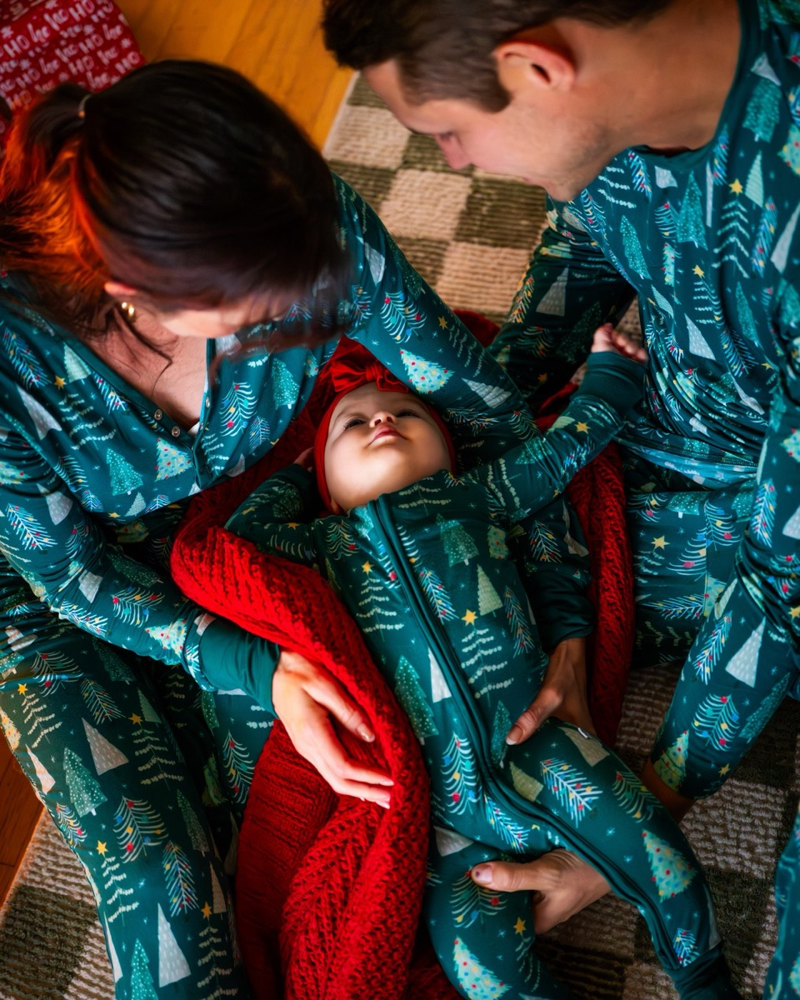
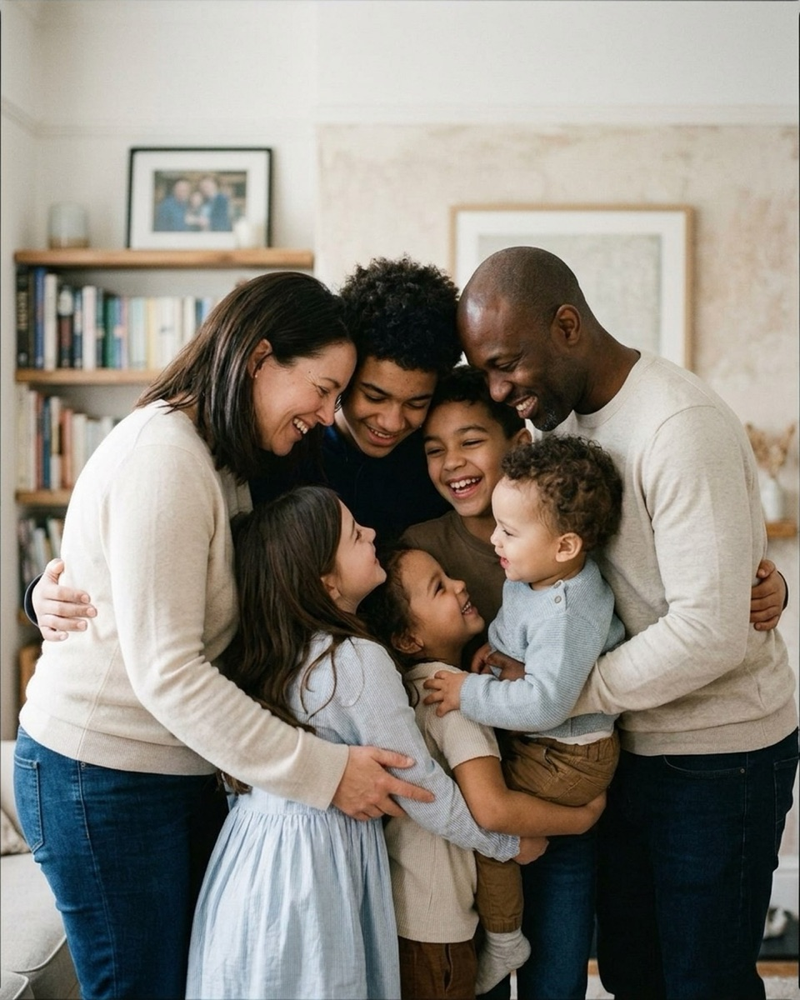
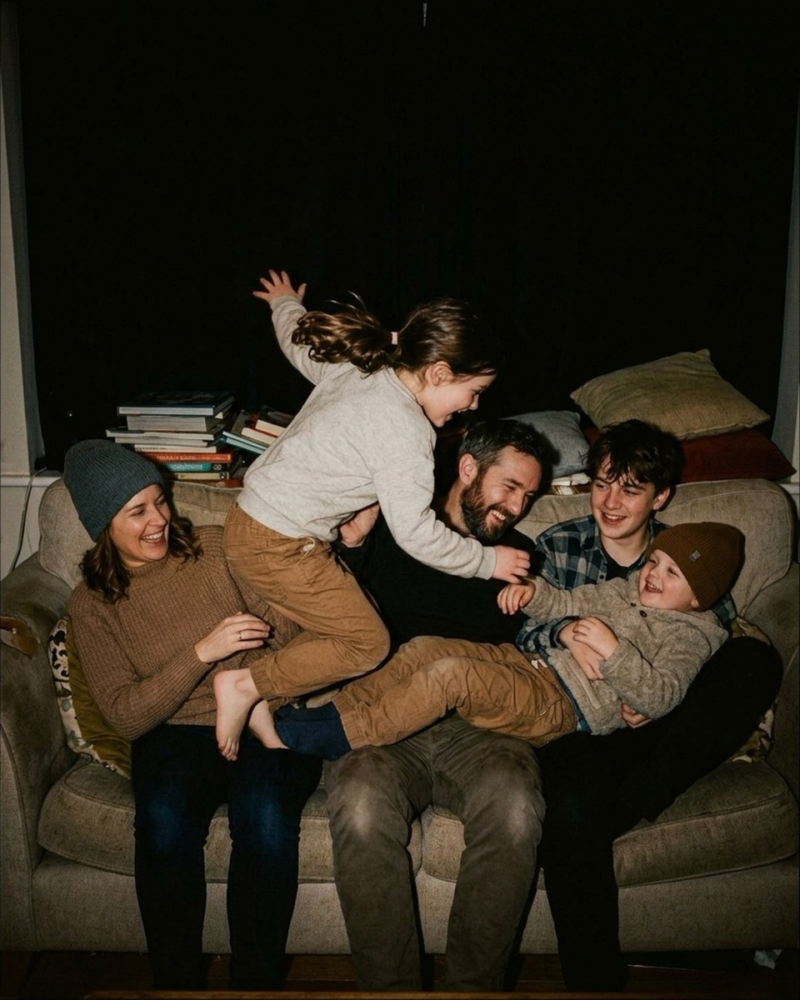

Holiday card sessions in low light
Nine poses for a fifteen-minute holiday session in a November window, at the tree, and after dark with flash — with the exact words to say, quoted from the Prompted catalog.
A holiday card only needs one frame — not a session's worth, one. That changes how you should plan a December sitting: instead of chasing thirty different setups the way you might for a fall mini session, you're hunting for the handful of poses that reliably deliver a single sharp, warm, everyone-looks-good photograph before a toddler's patience or a baby's nap schedule runs out. Budget fifteen minutes for the actual shooting. The light this time of year is thinner and shorter than October's, and holiday houses are full of things competing for a small child's attention. Most of what you're working with is a north-facing window in November: soft, directionless, gone by four in the afternoon. That means this session lives close to that one window, with the fireplace and tree filling in as background rather than as light sources. Here's how to use what you have, in the order that gets the card frame before anyone melts down.
By the window
Start here, before the baby's attention span or the light itself starts to go. These three read as the most natural because they are the most natural — real sessions, real window light, nothing built for the camera.
The overhead lift by the mantel

Stand the parent in profile a few feet from the window, decorated mantel just behind them so the garland shows without competing with the shot. Lift the baby straight up at arm's length, hands secure under her torso, and have the parent tilt their own head back to look up at her rather than toward the lens — that upward gaze is what keeps the frame from reading as posed. If the mantel is strung with lights, leave them on; at this distance they blur into warm dots instead of fighting the window light on the baby's face.
You don't need to look at the camera at all. Just keep your eyes locked on that sweet face.
Nervous clientFrom the pose “Mantel overhead lift”
Say this the moment you see a parent glance toward the lens instead of the baby. It's the first line of the session, meant to lower the stakes before anything else.
Give her a little airplane lift and make your absolute best funny noise.
PlayfulFrom the pose “Mantel overhead lift”
Use once the parent looks comfortable holding the pose. The noise, not the lift, is what gets the real laugh — coach them to commit to it fully.
The hip cradle in the window light

Turn the mother three-quarters toward the window so the light wraps her face and the baby's from one side rather than flattening both. She holds the baby high against her chest, both arms underneath for support, and looks straight down instead of toward the camera — that downward gaze does more work than any instruction about smiling. If there's a tree or a string of lights behind them, keep it a few feet back so it stays a soft blur rather than a bright shape sitting at the same depth as their faces.
Breathe in, drop your shoulders, and just look down at that sweet face.
CalmFrom the pose “Hip cradle gaze”
Use it anytime a parent looks visibly tense or over-aware of the lens. Redirecting their focus to the baby erases the stiff, camera-ready face almost instantly.
The overhead lap cradle

Sit both parents on the floor facing each other, knees tucked together to form a cradle, and spread a soft blanket across their laps for the baby to lie back on. Set this up directly under the window rather than off to one side — you'll be shooting straight down, and you want the light falling evenly across her face instead of raking across just one parent. Both parents lean in close, hands resting gently along her sides, eyes down on her rather than up at you. Keep any tree lights out of this angle entirely; from directly overhead they'd only show up as stray highlights on the floor.
You don't have to look up at me at all. Just keep your eyes right on her.
Nervous clientFrom the pose “Lap cradle overhead”
Use it as soon as both parents are in position and one of them checks in with the camera. It anchors their attention back down before you start shooting.
Want the fall mini session shot list?
About 25 poses grouped by family size, each with the words to say. Free PDF.
One email to confirm, one with the PDF. Unsubscribe any time.
At the tree or hearth
Once the window frames are safely captured, move a few feet toward the fireplace or tree. The fire adds a second, warmer light source; the tree adds color in the background. Neither should be doing the actual work of lighting a face — that's still the window, just further away now.
Baby laughing between two parents

Seat both parents close together in front of the lit fireplace, angled slightly toward each other, and have the mother hold the baby up on her lap facing the father. He leans in from the side for an over-the-shoulder angle while you get down to the baby's eye level instead of shooting from standing height. The fire does double duty here, acting as both your fill light and your background color, so if the tree is also in frame, keep it far enough back that its lights read as scattered warmth rather than a second bright subject pulling focus.
Dad, give me your best funny face or sound on the count of three. One, two, three!
PlayfulFrom the pose “Between shoulders giggle”
Use when the baby looks bored between both parents. Counting down out loud gives dad permission to actually commit instead of half-trying, which is usually what gets the real laugh — the same trick that works when you're chasing natural smiles anywhere else in a session.
Watching a gift on the rug

Settle the mother and baby onto a rug in front of the fireplace, close enough that the decor reads in the background without needing extra light. She sits with legs folded, angled in toward the baby, who sits upright beside her holding a small wrapped gift to keep her hands busy. Ask the mother to keep her eyes on the baby the whole time, not the camera — the real reactions happen when nobody's watching for them. If the mantel or tree lights show over her shoulder, that's fine; at this distance they fall out of focus into soft color instead of pulling attention from the two faces.
Take a slow breath and just soak in this little holiday moment with her.
CalmFrom the pose “Rug gift watch”
A good line once the gift has stopped being novel and the mother's posture starts to stiffen. It gives her something to do besides wait for your cue.
One baby, one gift, one frame

Sit the baby upright on the rug, angled diagonally so the fireplace or tree lights sit softly behind her rather than directly behind her head. Give her a small, light wrapped box to hold and explore — it occupies her hands and keeps her attention down, off the lens. Have a parent stand just behind and slightly above you, out of frame, making quiet sounds or a small game to pull her gaze up and to the side. Reach for this one when you need a single portrait with no one else in the frame — a solo card option that doesn't depend on anyone else cooperating.
Don't worry about getting her to look at the lens. Just stand right behind my shoulder and do whatever makes her smile at home.
Nervous clientFrom the pose “Gift box solo sit”
Say this to the parent standing in as your attention-getter. It tells them exactly what job they have, instead of leaving them guessing at what you need.
Tummy time by the hearth

Lay a textured blanket on the floor a safe distance from the fireplace and set the baby on her stomach, propped up on her forearms and angled slightly toward you. A small tabletop tree or another warm light a few feet behind her turns into soft bokeh at this distance, so it never competes with her face. Get all the way down to the floor yourself, shooting from her eye level instead of looking down — that's what makes the frame feel like you were in the room with her, not photographing over the back of a couch.
Let's give her a quiet moment right here to just watch the tree lights.
CalmFrom the pose “Hearth tummy time”
Use it when she's fussy or overstimulated from the rest of the room. It buys her — and you — a few settled seconds before the next setup.
The one for the card
This is the frame that actually goes on the card, so it's the one place in the session where you want everyone's eyes on the lens, not on each other. We don't yet have a real photograph of this exact setup in holiday light — the reference below is AI-generated, the way most references are for group arrangements we haven't shot on a real family yet. If you've shot something like it, the catalog can use the real thing instead: see how to contribute a photo.
Everyone in one huddle

Build this near the window so the whole cluster gets even light instead of one side falling into shadow. Parents anchor the corners, angled slightly inward, with older kids stacked toward the center and the youngest two tucked into the front where an arm can wrap around each of them — the same physical logic that holds together any larger family group once you're past two or three people. Get everyone actually touching — shoulders, waists, hands — before you ask for anything else; a tight huddle reads as connected even in a half-second where someone's eyes are shut. Run it candid for a dozen frames, then call one count where every face turns to the lens at once. That's the frame you print.
Look at the little one and just watch them for a minute.
CalmFrom the pose “Heads together huddle home”
Use for the candid frames before you call the camera-look. It's also a reliable way to hold an older kid's attention on the group instead of wandering off mid-setup.
Whoever laughs first has to do the dishes tonight.
PlayfulFrom the pose “Heads together huddle home”
Fire this right before you call the camera-look count. The threat of dish duty gets a genuine laugh out of at least one sibling, which spreads to the rest of the huddle.
After dark with flash
By the time it's fully dark outside, the window stops contributing anything and flash becomes your only light.
The couch pile after bedtime routines start

Seat the family close together on the couch — mother, father, teen son in a row — and let the youngest lie back across the father and teen's laps while another child clambers across the group toward the father's chest, one arm out for balance. Ask them to roughhouse and tickle for real rather than hold still; a bounced or diffused flash freezes the motion sharp enough that the chaos reads as a genuine moment instead of a blur. Keep the flash off-camera or bounced off the ceiling if you can manage it — direct on-camera flash flattens a pile this deep and throws hard shadows onto whoever's sitting in front.
Kids, on three, show me your silliest monster face. Parents, act terrified.
PlayfulFrom the pose “Couch pile home”
Use once everyone's already tangled together and the tickling has started to feel repetitive. A new instruction resets the energy without breaking the physical pile.
Shoot the card frame first
Whatever else you plan to shoot, get the card frame in the first five minutes. A baby who's fresh out of the car seat, not yet full of whatever she'll be handed in twenty minutes, gives you her best face once — usually in that first stretch of window light, before anyone's patience runs thin. Start with the overhead lift or the hip cradle, then move straight to whichever huddle or solo frame you actually need for the card, and only after that turn to the fireplace and hearth poses that ask for more settling-in time. If it gets dark before you finish everything else, the flash pose above still has you covered — but the card itself should already be safely on your memory card long before that.
The Fall Mini Session Shot List
About 25 poses grouped by family size, each with the words to say. A free PDF, sent once you confirm your address.
One email to confirm, one with the PDF. Unsubscribe any time. No selling, no sharing.
Every prompt in this guide is in the app, with the pose it belongs to.
Prompted is the posing app that is only a posing app: 250+ poses, each with word-for-word prompts in four tones, filtered to the light you're standing in. The sun tracker is free forever.
Get Prompted on the App Store